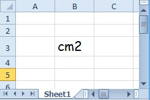
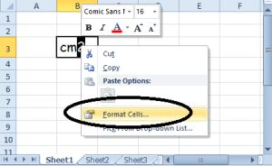
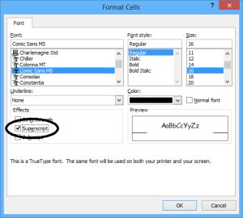
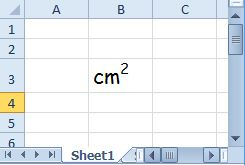
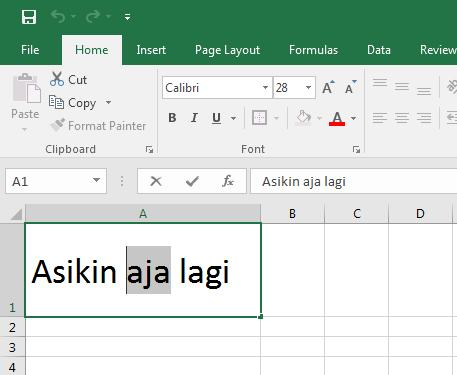
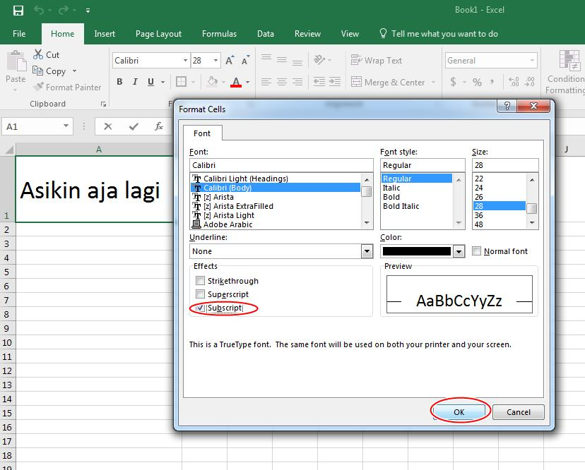
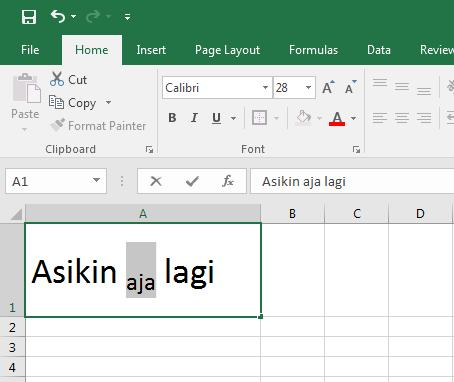
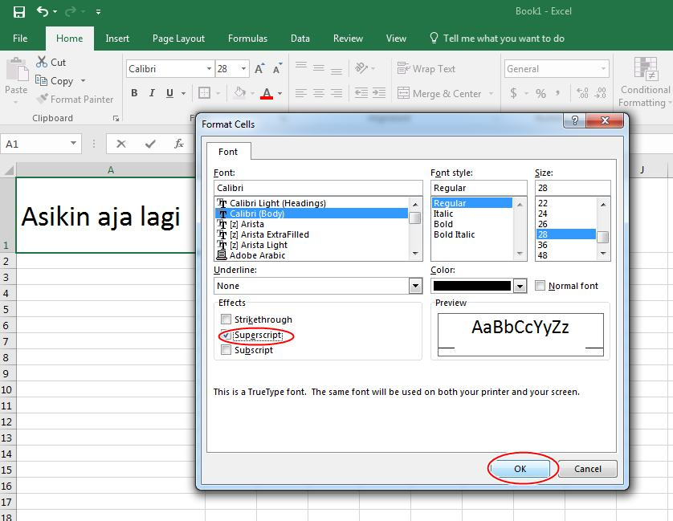
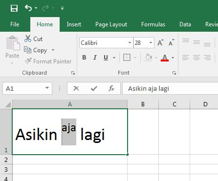

Pangkat, superscript, dan subscript
Ada dua urusan berbeda: menghitung pangkat dengan rumus, dan menulis pangkat sebagai tampilan teks seperti m².
Coba langsung di browserLembar kerja mini, kuis, dan tanda selesai.
Buka versi interaktif=angka^pangkat atau =POWER(angka; pangkat)
| angka | Bilangan pokok |
|---|---|
| pangkat | Bilangan pangkat |
Langkah praktik
- Untuk menghitung: ketik =2^10 atau =POWER(2;10). Hasilnya 1024.
- Untuk menulis m²: klik sel, tekan F2, blok angka 2, buka Format Cells (Ctrl+1), centang Superscript.
- Subscript (seperti H₂O) memakai cara yang sama dengan mencentang Subscript.
Tips
Superscript hanya mengubah tampilan teks. Excel tidak menghitungnya sebagai pangkat.
Tangkapan layar praktik
9 gambar langkah demi langkah. Klik gambar untuk membuka ukuran penuh.








